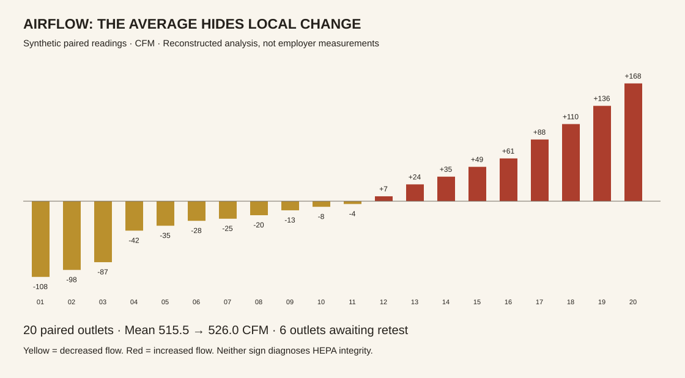

← PortfolioPUBLIC DEMO / SYNTHETIC RECORDS
From source rows to an engineering decision.
A browser reconstruction of three separate internship workflows: an Excel/VBA manufacturing scorecard, a Smartsheet purchasing/inventory tool, and an Excel airflow analysis. The original employer files are not included. These calculations demonstrate documented mechanics with fictional records; they are not a recovered workbook or evidence of measured business impact.
01 / Weekly quality scorecard
UIDs encode YYMMDD plus a three-digit sequence. The historical particle KPI checks the primary defect only; grouped frequency below counts all defect fields on failed units. A unit may contribute more than one defect occurrence. Empty periods return an em dash for percentages.
Families rank by their largest individual count, then defects rank within each family. This preserves the documented grouped ordering, rather than a conventional global Pareto sort.
Inspect the selected source records
Work-order delivery review
The scorecard read a changing work-order log and updated the active week. It kept previous weeks intact. Here, relative due dates and the original highlight rule show how an overdue order can be excluded from the risk count. “On time” is a historical planning bucket, not proof of a completed shipment.
02 / Purchasing history is not stock on hand
14 fictional PO lines, 10 master parts. Only two declared aliases (394720 → 00394720 and 426080 → 00426080) are merged. Original IDs remain intact; no universal stripping of meaningful leading zeros. Mean interval uses distinct purchase dates. Quantity on hand remains unverified because receipt/withdrawal transactions are absent.
NEW-990: missing inventory master — review before matching.
The same-day valve orders total five units, but do not establish an order interval. Historical stock forecasting remained experimental. This demo deliberately reports evidence states instead of inventing a verified replacement date.
03 / Paired cleanroom airflow readings

The six missing follow-up readings are excluded from both paired averages. A blank is not zero. Historical Excel work used row-specific structured references, sign-based formatting, sorting and summary statistics. Hood measurements assess airflow; filter integrity and particle causation require other evidence.
Calculation and historical boundaries
Blank-aware Excel equivalent: =IF(OR([@[Updated Flow]]="",[@[Flow (cfm)]]=""),"",[@[Updated Flow]]-[@[Flow (cfm)]])
The original scorecard also included weekly delivery categories, end-of-day navigation and refresh automation. VBA depends on desktop Excel. Those macros and the weekly snapshot behavior are described here but are not implemented by this browser demo. Original workbook boundaries and exact layouts cannot be fully recovered from the source conversations.